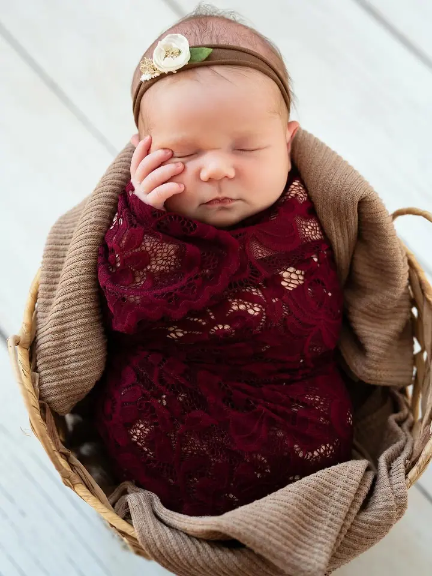
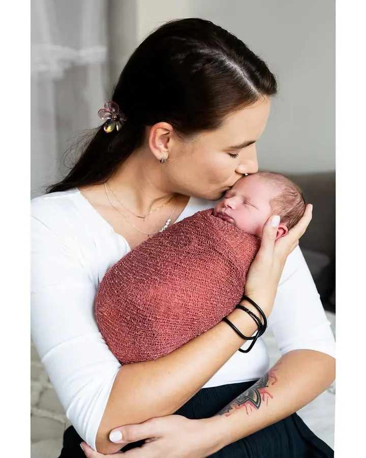
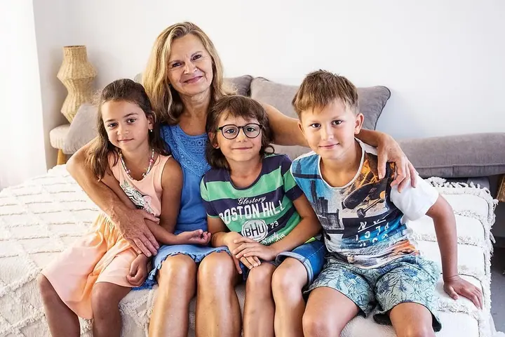

Novorozenecké focení
Miminka fotím ve spánku, ideálně mezi 7. a 11. dnem života, ve svém vytopeném ateliéru v Jičíně. Rekvizity mám připravené, a když chcete, vyfotím s miminkem i rodiče a sourozence.

Jmenuji se Denisa Bláhová a už 12 let fotím hlavně novorozence a těhotné maminky. Ve svém ateliéru v Jičíně i venku v okolí fotím také rodiny.
Rezervovat termínBydlím v malebném Jičíně a tady mám i svůj fotoateliér. Už 12 let se věnuji hlavně focení novorozenců a těhotných maminek, ráda ale fotím i celé rodiny.


Mám ráda jednoduché a čisté fotografie, na kterých je hlavní vaše děťátko. Ateliér mám přizpůsobený focení miminek, vždycky dobře vytopený a s rekvizitami a doplňky, které vidíte na mých fotkách. S novorozencem počítejte zhruba se 3 až 5 hodinami, nikam nespěcháme.
Na focení venku vybírám místo tak, aby sedělo právě vám a abyste si čas se mnou užili. Než přijdete, pošlu vám e-mail se vším, co budete potřebovat, a ráda vám poradím i s tím, jak sladit oblečení.
Co fotím
Miminka fotím ve spánku, ideálně mezi 7. a 11. dnem života, ve svém vytopeném ateliéru v Jičíně. Rekvizity mám připravené, a když chcete, vyfotím s miminkem i rodiče a sourozence.
Rodinu vyfotím v ateliéru nebo venku v Jičíně a okolí, nejraději v podvečer, kdy je sluníčko nízko. Místo vybírám tak, abyste se při focení cítili uvolněně.
Nejvhodnější doba je konec sedmého a začátek osmého měsíce, kdy se ještě cítíte dobře a bříško je hezky vidět. Fotit můžeme v ateliéru i venku.
Postup
Na novorozenecké focení se ideálně objednejte ještě před porodem a já s vámi v tom období počítám. Po narození mi stačí poslat SMS a obratem vám nabídnu volné termíny.
Pošlu vám e-mail se všemi informacemi k vybranému balíčku. Ráda poradím, co si vzít na sebe a jak sladit oblečení.
Miminka fotím v teple svého ateliéru v Jičíně, těhotenské a rodinné focení může být i venku. Den předem si podle počasí potvrdíme místo a čas.
Do 5 pracovních dnů vám pošlu zaheslovanou galerii s náhledy. Vybrané fotky upravím obvykle do 4 týdnů a pošlu vám je v tiskové kvalitě i ve verzi pro sociální sítě.
Otázky
Ideálně mezi 7. a 11. dnem života, nejpozději do 14 dnů od porodu. Miminka jsou v té době hodně spavá a dají se pohodlně schoulit do poloh, jaké znají z bříška.
Počítejte zhruba se 3 až 5 hodinami. Přizpůsobujeme se miminku, na krmení i na mazlení je dost času.
Těhotenské a rodinné focení může být v ateliéru i venku, v Jičíně nebo v okolí. Za cestu nad 5 km od Jičína účtuji cestovné 9 Kč/km. Novorozence fotím jen v ateliéru.
Ano, nabízím poukazy v hodnotě 3 000 Kč nebo 3 500 Kč. Výjimečně se dá domluvit i poukaz na míru.